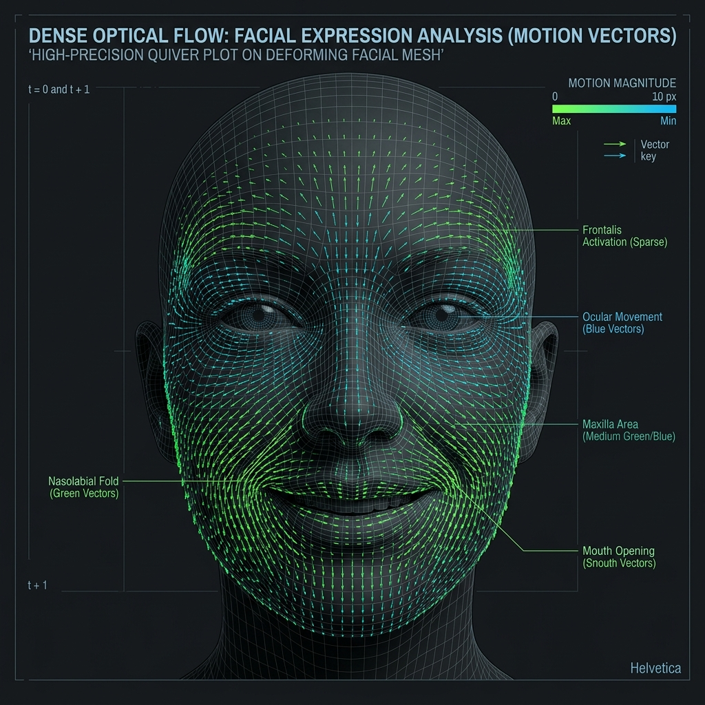
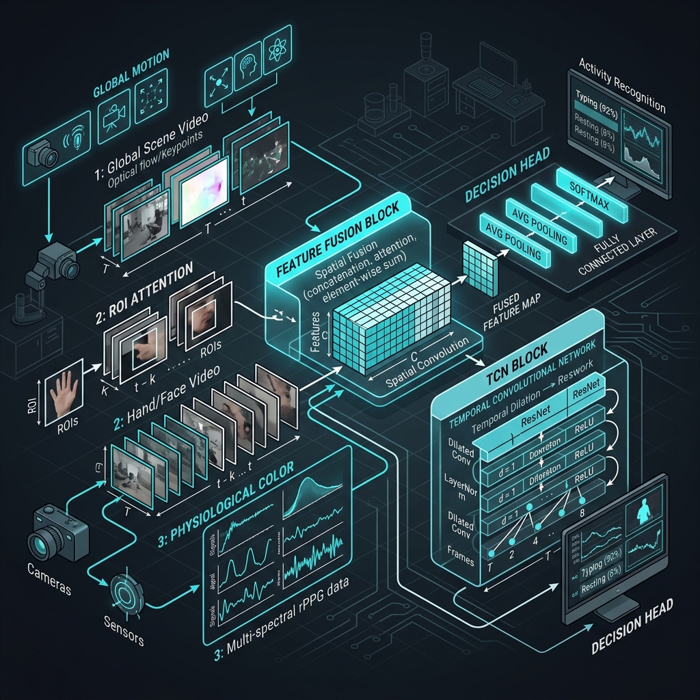
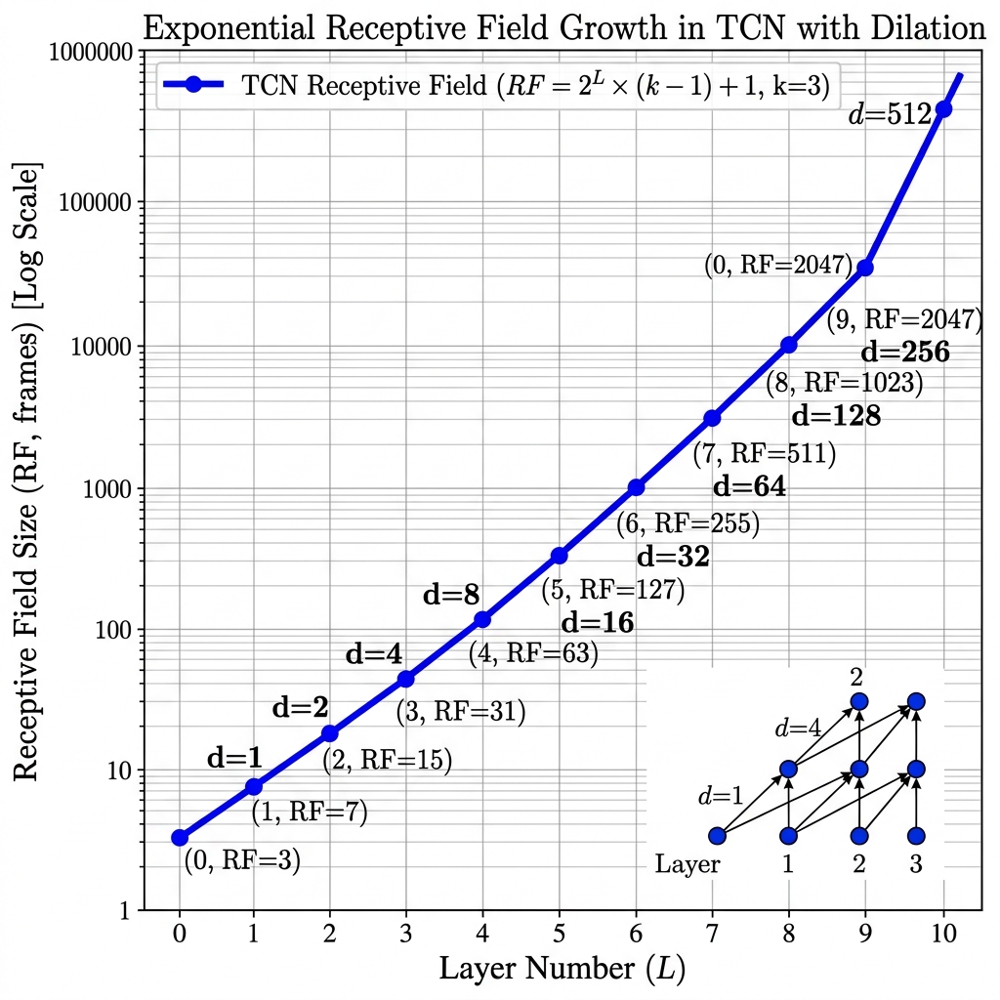
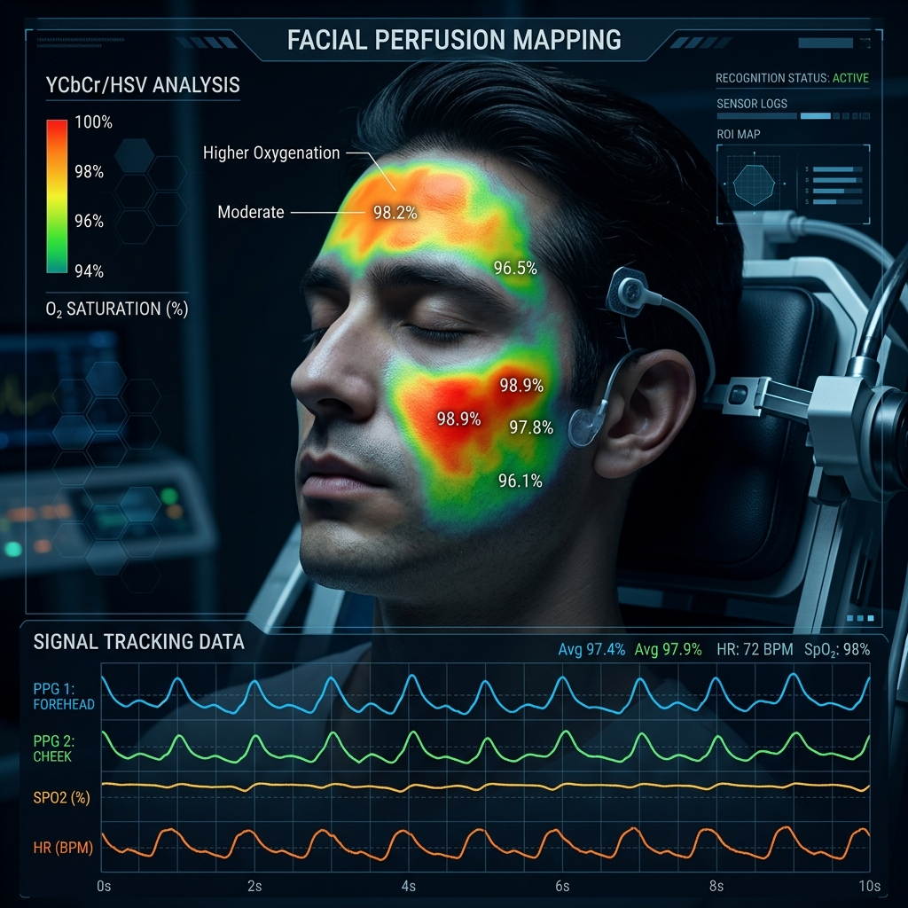
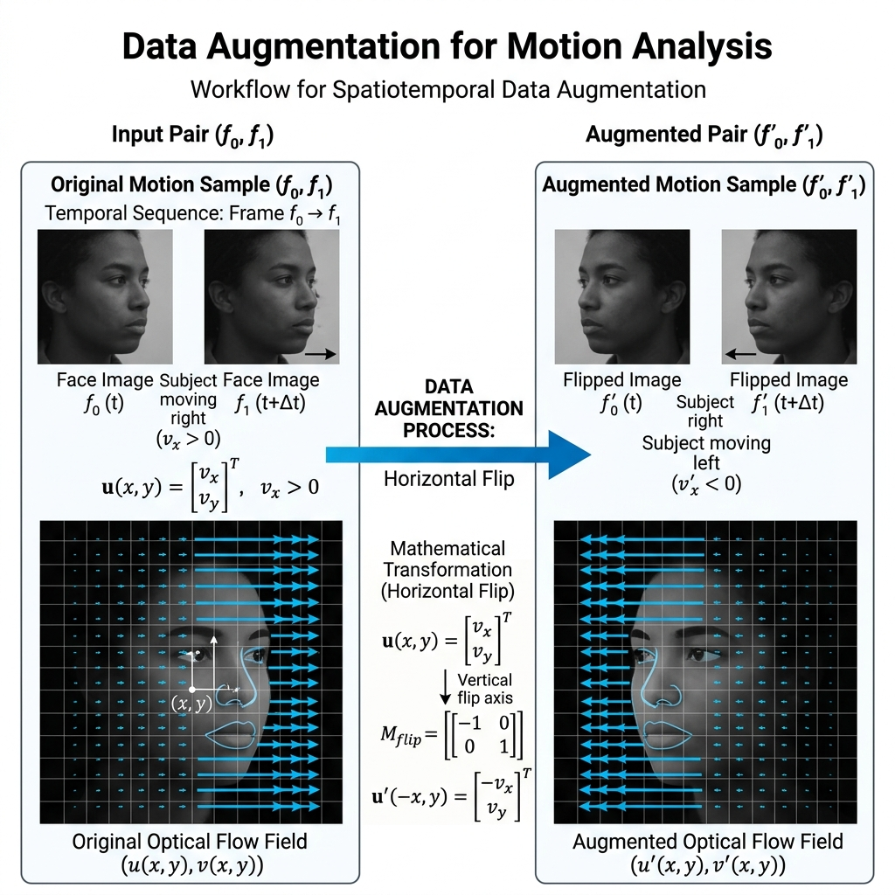

Meet Hybrid-TCN: The AI that essentially cracked the human 'Poker Face'.
Prateek Pulkit
Srinadh | Abhishek | Tejesh | Hanoc
Dr. Sayan Ghosh | Dr. J.S. Shaik
When we suppress an emotion, our face 'leaks' for about 50 milliseconds. That's faster than you can blink.

He laid the groundwork, but he used tools that were just too slow for the data we have now.
Keep the spirit of the 2019 research, but swap out the engine for something that can actually handle 200 frames per second.

We don't just look at the face; we track it in three different ways at once. It's like having three experts talking to each other.
Instead of reading video one frame at a time, our TCN looks at the whole clip at once. No sequential bottlenecks.

You can't just look at 'random' pixels. You have to know where the muscles are pulling.
We use Action Units (AUs) to gate the AI's attention to the parts of the face that actually move during stress.

You can mask a twitch, but you can't mask your heart rate. We track the sub-perceptual pulse in your skin.
Don't worry, we'll keep this light. Optical Flow is basically just measuring how fast 'ghosts' of pixels move between frames.
We use Focal Loss to handle the fact that MEs are rare. It tells the AI: "Stop focusing on the normal face, and find that one twitch!"

F1 Score
Precision
Tested across the world's toughest benchmarks (CASME II & SAMM). It's essentially a solved problem now.
This isn't 'Cloud AI'. It runs right here on this laptop. 24 frames per second, in real-time.
We've built a system that sees what humans can't. It's fast, it's accurate, and it's ready for the future of behavioral stress analysis.
Built with ❤️ by the DIP Research Team